—本文基本的内容都是来源于《程序员的自我修养》，之所以摘录下来是为了方便查阅，还有一部分表格是来源于滕启明写的《ELF文件格式分析》。顺便安利一下这本书，是本程序员必读的好书，看了好几遍，每次看都有新收获。
可执行和可链接格式(Executable and Linkable Format，缩写为ELF)，常被称为ELF格式，在计算机科学中，是一种用于执行档、目的档、共享库和核心转储的标准文件格式。
ELF由UNIX实验室作为应用程序二进制接口(Application Binary Interface，ABI)而开发和发布的，1999年，被86open项目选为x86架构上的类Unix操作系统的二进制文件标准格式，用来取代COFF。
ELF文件主要有四种类型：
- 可重定位文件（Relocatable File） 包含适合于与其他目标文件链接来创建可执行文件或者共享目标文件的代码和数据。
- 可执行文件（Executable File） 包含适合于执行的一个程序，此文件规定了 exec() 如何创建一个程序的进程映像。
- 共享目标文件（Shared Object File） 包含可在两种上下文中链接的代码和数据。首先链接编辑器可以将它和其它可重定位文件和共享目标文件一起处理，生成另外一个目标文件。其次，动态链接器（Dynamic Linker）可能将它与某个可执行文件以及其它共享目标一起组合，创建进程映像。
- 核心转储文件（core dump） 当进程意外终止时，系统可以将该进程的的地址空间的内容及终止时的一些其他信息转储到核心转储文件。
数据表示
ELF文件有32位和64位两种版本。为了适应各种平台，ELF有一套自己的变量体系，在”/usr/include/elf.h”中可以看到这些变量的定义。
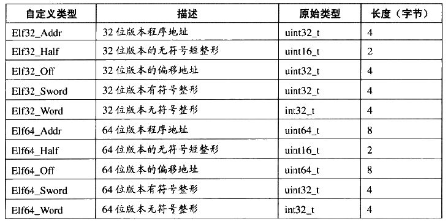
本文主要研究ELF的32位版本，64位的版本除了数据成员大小不相同外其他部分基本类似
视图
与windows下的PE文件不同，ELF文件在磁盘中和被加载到内存中并不是完全一样的，ELF文件提供了两种视图来反映这两种情况:链接视图和执行视图。顾名思义，链接视图就是在链接时用到的视图，而执行视图则是在执行时用到的视图。
程序头部表(Program Header Table)，如果存在的话，告诉系统如何创建进程映像。
节区头部表(Section Header Table)包含了描述文件节区的信息，比如大小，偏移等。
当ELF文件被加载到内存中后，系统会将多个具有相同权限Section(节)合并成一个Segment(段)，通常为代码段(可读可执行)，可读可写的数据段，和只读数据段。例如下图的libc在进程中的段的分布。对于可执行文件，程序头部表告诉系统如何映射Segment，而目标文件是没有这个表的(关于可执行文件的装载原书有详细分析)。
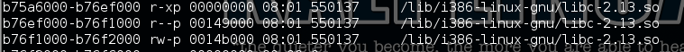
这里我们主要讨论链接视图
文件头
ELF目标文件格式的最前部是ELF文件头，它描述了整个文件的基本属性，比如ELF文件版本，目标机器型号，程序入口地址等。可以在”/usr/include/elf.h”中找到它的定义。1
2
3
4
5
6
7
8
9
10
11
12
13
14
15
16
17typedef struct
{
unsigned char e_ident[EI_NIDENT]; /* Magic number and other info */
Elf32_Half e_type; /* Object file type */
Elf32_Half e_machine; /* Architecture */
Elf32_Word e_version; /* Object file version */
Elf32_Addr e_entry; /* Entry point virtual address */
Elf32_Off e_phoff; /* Program header table file offset */
Elf32_Off e_shoff; /* Section header table file offset */
Elf32_Word e_flags; /* Processor-specific flags */
Elf32_Half e_ehsize; /* ELF header size in bytes */
Elf32_Half e_phentsize; /* Program header table entry size */
Elf32_Half e_phnum; /* Program header table entry count */
Elf32_Half e_shentsize; /* Section header table entry size */
Elf32_Half e_shnum; /* Section header table entry count */
Elf32_Half e_shstrndx; /* Section header string table index */
} Elf32_Ehdr;
e_ident这个数据给出了ELF文件的一些标识信息。在elf.h中定义了它的每一个索引。如下：
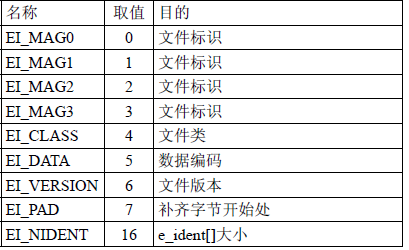
这些索引取值如下：
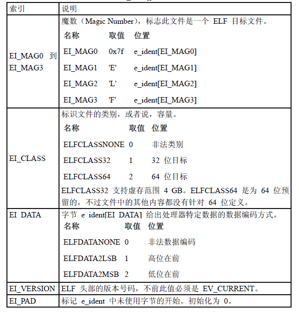
下面是ELF各个字段的说明：
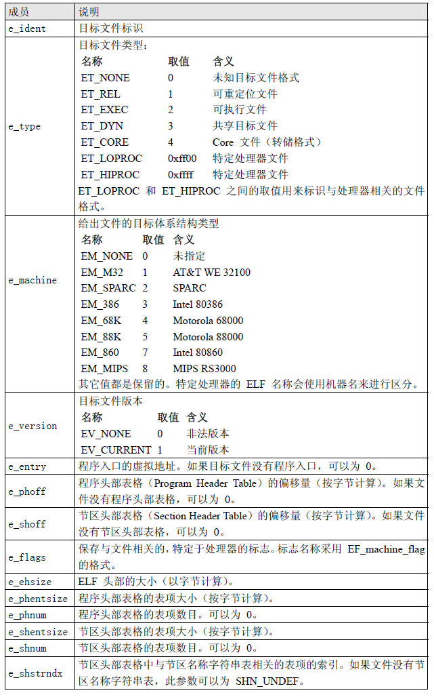
下面我们通过一个实际的ELF文件来和上面的表格信息做一个对比，首先我们编译一个简单的目标文件。源码来自《程序员的自我修养》，稍微做了下修改。1
2
3
4
5
6
7
8
9
10
11
12
13
14
15
16
17
18
19
20#include <stdio.h>
int global_init_var = 84;
int global_uninit_var;
void func1(int i)
{
printf("%d\n",i);
}
int main(void)
{
char *str = "hello";
static int static_var = 85;
static int static_var2;
int a = 1;
int b;
func1(static_var + static_var2 + a + b);
return 0;
}
使用1
gcc -c SimpleSection.c
编译，然后使用1
readelf -h SimpleSection.o
查看SimpleSection的文件头的信息。
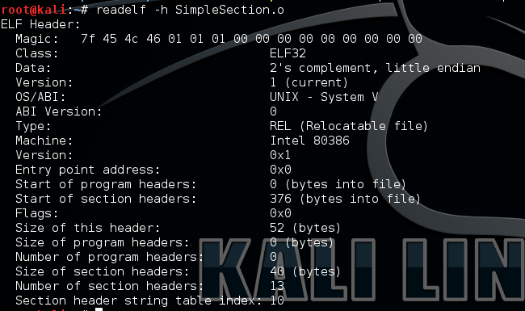
节区
前面我们已经知道elf文件主要是由各种节组成的，对于每一个节在节区头部表中都有一项与之对应，我们可以通过1
readelf -S SimpleSection.o
来查看SimpleSection.o的节的信息。如下：
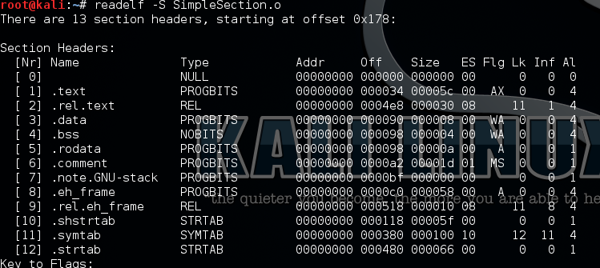
readelf输出的信息就是elf节区头部表中的内容，在elf文件头中e_shoff 成员给出从文件头到节区头部表格的偏移字节数；e_shnum给出表格中条目数目；e_shentsize 给出每个项目的字节数。从这些信息中可以确切地定位节区的具体位置、长度。
节区头部表是一个以”Elf32_Shdr”结构体为元素的数组，每个”Elf32_Shdr”对应了一个节。需要注意的是，节区头部表数组下表为0的元素是一个无效的节描述符，它的类型为NULL。除了第一个元素，这个数组还有一些特殊的下标。
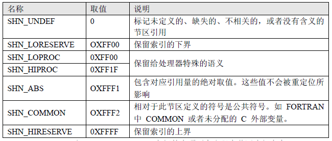
下面我们来看一下”Elf32_Shdr”的定义：1
2
3
4
5
6
7
8
9
10
11
12
13
14
15/* Section header. */
typedef struct
{
Elf32_Word sh_name; /* Section name (string tbl index) */
Elf32_Word sh_type; /* Section type */
Elf32_Word sh_flags; /* Section flags */
Elf32_Addr sh_addr; /* Section virtual addr at execution */
Elf32_Off sh_offset; /* Section file offset */
Elf32_Word sh_size; /* Section size in bytes */
Elf32_Word sh_link; /* Link to another section */
Elf32_Word sh_info; /* Additional section information */
Elf32_Word sh_addralign; /* Section alignment */
Elf32_Word sh_entsize; /* Entry size if section holds table */
} Elf32_Shdr;
下面是每一项的描述。
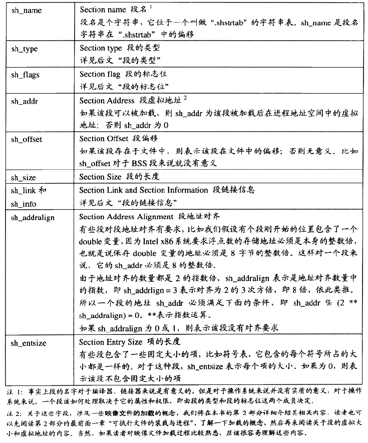
上表来自《程序员的自我修养》，书中的对”section”的翻译和我这里不一样，书中的”段”可表示本文中的节。
我们对比”readelf -S”和”readelf -h”的输出，可以看到在SimpleSection.o中一共有13section，每一个section的大小为40字节。所以整个节区头部表的大小为520个字节。
节区类型-sh_type
上表中说过，节的名字只在链接和编译过程中有意义，但是它不能真正表示段的类型。对于编译器和链接器，主要决定段的属性的是段的类型(sh_type)和段的标志位(shflags)。段的类型相关常量以SHT开头，列举如下表。
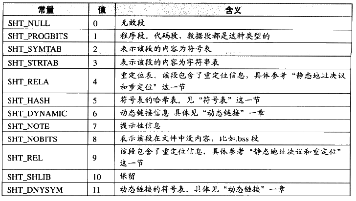
节的标志位
节的标志位表示该节在进程虚拟地址空间中的属性，比如是否可写，是否可执行等。相关常量以SHF_开头，如下表：
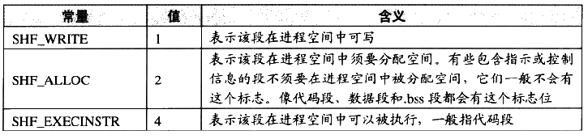
对于系统保留段，下表列举了他们的属性。
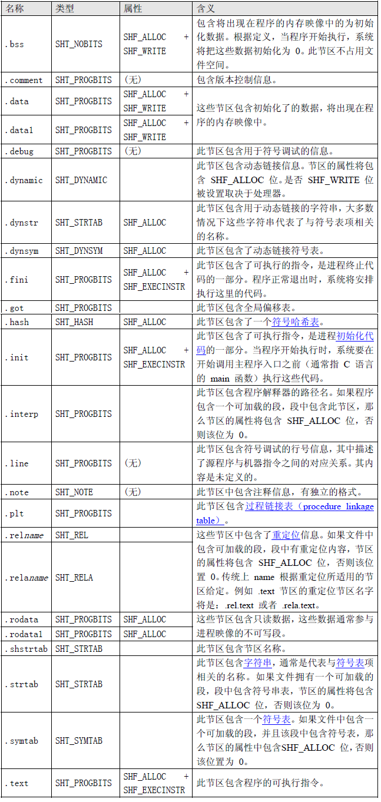
以”.”开头的节区名称是系统保留的。我们在为节区命名时应该使用没有”.”前缀的以免与系统节区冲突。
节的链接信息(sh_link、sh_info) 如果节的类型是和链接相关的，比如重定位表、符号表等，那么sh_link和sh_info两个成员包含的意义如下。对于其他段，这两个成员没有意义。
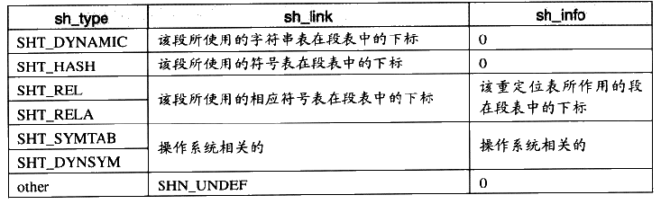
字符串表
在ELF文件中，会用到很多字符串，比如节名，变量名等。所以ELF将所有的字符串集中放到一个表里，每一个字符串以’\0’分隔，然后使用字符串在表中的偏移来引用字符串。
比如下面这样：
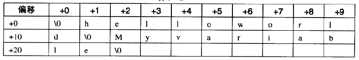
那么偏移与他们对用的字符串如下表:
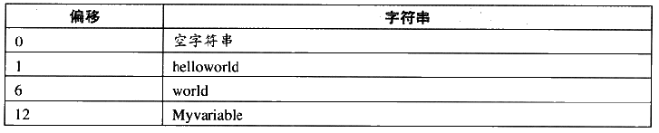
这样在ELF中引用字符串只需要给出一个数组下标即可。字符串表在ELF也以节的形式保存，常见的节名为”.strtab”或”.shstrtab”。这两个字符串表分别为字符串表(String Table)和节表字符串表(Header String Table)，字符串表保存的是普通的字符串，而节表字符串表用来保存节表中用到的字符串，比如节名。
再来看ELF文件头中的”e_shstrndx”的含义，前面说到它表示节表字符串在节表中的下表，在SimpleSection.o文件头中我们看到”e_shstrndx”的值为13，然后我们再看节表第13个刚好是”.shstrtab”。之所以要在ELF文件头中存放这样一个字段，就是为了只用分析ELF文件头就可以得到节表和节字符串表，从而解析整个ELF文件。
符号表
在链接的过程中需要把多个不同的目标文件合并在一起，不同的目标文件相互之间会引用变量和函数。在链接过程中，我们将函数和变量统称为符号，函数名和变量名就是符号名。
每一个目标文件中都有一个相应的符号表(System Table)，这个表里纪录了目标文件所用到的所有符号。每个定义的符号都有一个相应的值，叫做符号值(Symbol Value)，对于变量和函数，符号值就是它们的地址。对于符号表中的符号，大概有以下几种：
- 定义在本目标文件中的全局符号，可以被其他目标文件引用。比如SimleSection.o中的”func1”，”main”和global_init_var。
- 在本目标文件中定义的全局符号，但是没有在定义在本目标文件，这一般叫外部符号(External Symbol)，也就是符号引用。比如SimleSection中的”printf”。
- 段名，这种符号往往由编译器产生，它的值就是该段的起始地址，比如SimpleSection.o里面的”.text”，”.data”等。
- 局部符号，这种符号只在编译单元内部可见。比如SimpleSection中的”static_var”。调试器可以使用这些符号来分析程序或崩溃时的核心转储文件。这些局部符号对于链接过程没有作用， 链接器也常常忽略他们。
- 行号信息。即目标文件指令与源代码文件总代码行的对应关系，它也是可选的。
我们只关注前两种符号。可以使用”nm”来查看ELF的符号表。比如：
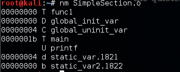
ELF文件中的符号表往往是文件中的一个段，段名一般叫”.symtab”。符号表的结构很简单，它是一个Elf32_Sym(32位)的数组，每个Elf32_Sym对应一个符号。这个数组的第一个元素，也就是下标为0的元素为无效的”未定义”符号。Elf32_Sym的结构定义如下：1
2
3
4
5
6
7
8
9
10
11/* Symbol table entry. */
typedef struct
{
Elf32_Word st_name; /* Symbol name (string tbl index) */
Elf32_Addr st_value; /* Symbol value */
Elf32_Word st_size; /* Symbol size */
unsigned char st_info; /* Symbol type and binding */
unsigned char st_other; /* Symbol visibility */
Elf32_Section st_shndx; /* Section index */
} Elf32_Sym;
他们的定义如下：
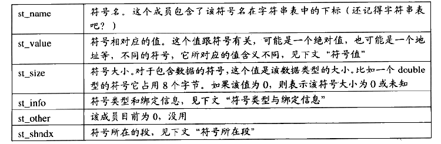
符号类型和绑定信息(st_info)
改成员的低4位标识符号的类型(Symbol Type)，高28位标识符号绑定信息(Symbol Binding)，如下表所示。
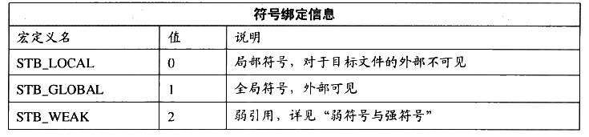
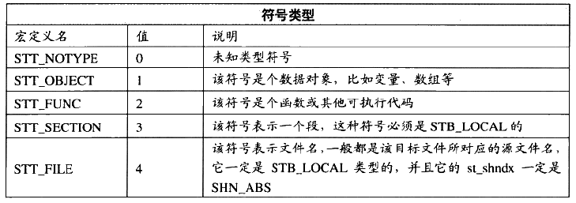
符号所在段(st_shndx)
如果符号定义在本目标文件中，那么这个成员表示符号所在段在段表中的下表，但是如果符号不是定义在本目标文件中，或者对于有些特殊符号，sh_shndx的值有些特殊。如下：
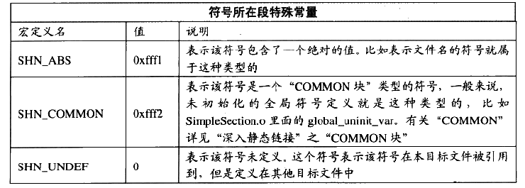
符号值(st_value)
每个符号都有一个对应的值。主要分下面几种情况：
- 如果符号不是”COMMON”类型的(即st_shndx不为SHN_COMMON)，则st_value表示该符号在段中的偏移，即符号所对应的函数或变量位于由st_shndx指定的段，偏移st_value的位置。比如SimpleSection中的”func1”，”main”和”global_init_var”。
- 在目标文件中，如果符号是”COMMON”类型(即st_shndx为SHN_COMMON)，则st_value表示该符号的对齐属性。比如SimleSection中的”global_uninit_var”。
- 在可执行文件中，st_value表示符号的虚拟地址。
使用1
readelf -s SimpleSection.o
来查看SimpleSection.o中的符号表。
这里我们可以看到readelf的输出与Elf32_Sym的各个成员几乎一致。对于func1和main函数，因为他们定义在SimpleSection.c中，所有他们的所在的位置为代码段，下标(Ndx)为1。又因为他们是函数，所以类型为STT_FUNC(Type)，它们是全局可见的，所以绑定信息(Bind)是STB_GLOBAL，Size表示函数指令所占的字节数，Value表示函数相对于代码段起始位置的偏移量。
对于printf函数，该符号在SimpleSection.c中被引用，但是没有被定义，所以它的Ndx是SHN_UNDEF。
global_init_var是已初始化的全局变量，它被定义在.bss段中。global_uninit_var是未初始化的全局变量，它是一个SHN_COMMON类型的符号，它本身并没有存在于BSS段。static_var.1553和static_var2.1534是两个静态变量，他们的绑定属性是STB_LOCAL，即只在编译单元内部可见。至于为什么他们的变量名从”static_var”和”static_var2”，变成了这两个”static_var.1533”和”static_var2.1534”，可以参见原书。
对于那些STT_SECTION类型的符号，它们表示下标为Ndx的段的段名。它们的符号名没有显示，其实它们的符号名就是段名。
重定位表
SimpleSection.o中有一个叫”.rel.text”的段，它的类型(sh_type)为”SHT_REL”，也就是说它是一个重定位表。链接器在处理目标文件时，需要对目标文件中的某些部位进行重定位，即代码段和数据中中那些绝对地址引用的位置。对于每个需要重定位的代码段或数据段，都会有一个相应的重定位表。比如”.rel.text”就是针对”.text”的重定位表，”.rel.data”就是针对”.data”的重定位表。
重定位表的数据结构如下：1
2
3
4
5
6
7
8
9
10
11
12
13
14
15/* Relocation table entry without addend (in section of type SHT_REL). */
typedef struct
{
Elf32_Addr r_offset; /* Address */
Elf32_Word r_info; /* Relocation type and symbol index */
} Elf32_Rel;
/* Relocation table entry with addend (in section of type SHT_RELA). */
typedef struct
{
Elf32_Addr r_offset; /* Address */
Elf32_Word r_info; /* Relocation type and symbol index */
Elf32_Sword r_addend; /* Addend */
} Elf32_Rela;
字段说明如下：
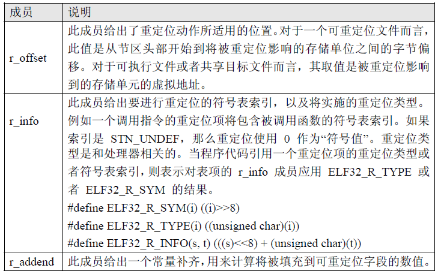
关于重定位的内容，也不再本文讨论范围之内，感兴趣的读者可以阅读原书。
下面是一个python版的elf解析器，目前只解析了elf header和section header table。1
2
3
4
5
6
7
8
9
10
11
12
13
14
15
16
17
18
19
20
21
22
23
24
25
26
27
28
29
30
31
32
33
34
35
36
37
38
39
40
41
42
43
44
45
46
47
48
49
50
51
52
53
54
55
56
57
58
59
60
61
62
63
64
65
66
67
68
69
70
71
72
73
74
75
76
77
78
79
80
81
82
83
84
85
86
87
88
89
90
91
92
93
94
95
96
97
98
99
100
101
102
103
104
105
106
107
108
109
110
111
112
113
114
115
116
117
118
119
120
121
122
123
124
125
126
127
128
129
130
131
132
133
134
135
136
137
138
139
140
141
142
143
144
145
146
147#-*-coding: utf-8 -*-
import sys
import struct
"""
Name Size Alignment Purpose
Elf32_Addr 4 4 Unsigned program address
Elf32_Half 2 2 Unsigned medium integer
Elf32_Off 4 4 Unsigned file offset
Elf32_Sword 4 4 Signed large integer
Elf32_Word 4 4 Unsigned large integer
unsigned char 1 1 Unsigned small integer
Elf64_Addr 8 8 Unsigned program address
Elf64_Off 8 8 Unsigned file offset
Elf64_Half 2 2 Unsigned medium integer
Elf64_Word 4 4 Unsigned integer
Elf64_Sword 4 4 Signed integer
Elf64_Xword 8 8 Unsigned long integer
Elf64_Sxword 8 8 Signed long integer
unsigned char 1 1 Unsigned small integer
#define EI_NIDENT 16
typedef struct {
unsigned char e_ident[EI_NIDENT]; 16 16B
Elf32_Half e_type; 18 H
Elf32_Half e_machine; 20 H
Elf32_Word e_version; 24 I
Elf32_Addr e_entry; 28 I
Elf32_Off e_phoff; 32 I
Elf32_Off e_shoff; 36 I
Elf32_Word e_flags; 40 I
Elf32_Half e_ehsize; 42 H
Elf32_Half e_phentsize; 44 H
Elf32_Half e_phnum; 46 H
Elf32_Half e_shentsize; 48 H
Elf32_Half e_shnum; 50 H
Elf32_Half e_shstrndx; 52 H
} Elf32_Ehdr;
typedef struct {
unsigned char e_ident[EI_NIDENT];
Elf64_Half e_type; 2 H
Elf64_Half e_machine; 2 H
Elf64_Word e_version; 4 I
Elf64_Addr e_entry; 8 Q
Elf64_Off e_phoff; 8 Q
Elf64_Off e_shoff; 8 Q
Elf64_Word e_flags; 4 I
Elf64_Half e_ehsize; 2 H
Elf64_Half e_phentsize; 2 H
Elf64_Half e_phnum; 2 H
Elf64_Half e_shentsize; 2 H
Elf64_Half e_shnum; 2 H
Elf64_Half e_shtrndx; 2 H
} Elf64_Ehdr;
"""
def readElfHeader(f):
global elf_class
global end_char
fmt_ident = '16s'
fmt32 = 'HHIIIIIHHHHHH'
fmt64 = 'HHIQQQIHHHHHH'
fields = ['e_ident', 'e_type', 'e_machine', 'e_version', 'e_entry',
'e_phoff', 'e_shoff', 'e_flags', 'e_ehsize', 'e_phentsize',
'e_phnum', 'e_shentsize', 'e_shnum', 'e_shstrndx']
f.seek(0)
ident_data = f.read(struct.calcsize(fmt_ident))
fmt = None
if ord(ident_data[4]) == 1:
elf_class = 32
fmt = fmt32
data = f.read(struct.calcsize(fmt32))
elif ord(ident_data[4]) == 2:
elf_class = 64
fmt = fmt64
data = f.read(struct.calcsize(fmt64))
if ord(ident_data[5]) == 1: #little-endian
fmt = '<' + fmt_ident + fmt
end_char = '<'
elif ord(ident_data[5]) == 2: #big-endian
fmt = '>' + fmt_ident + fmt
end_char = '>'
return dict(zip(fields,struct.unpack(fmt,ident_data+data)))
"""
typedef struct {
Elf32_Word sh_name; I
Elf32_Word sh_type; I
Elf32_Word sh_flags; I
Elf32_Addr sh_addr; I
Elf32_Off sh_offset; I
Elf32_Word sh_size; I
Elf32_Word sh_link; I
Elf32_Word sh_info; I
Elf32_Word sh_addralign; I
Elf32_Word sh_entsize; I
} Elf32_Shdr;
"""
def readShHeaders(f,elf_hdr):
fmt = '@IIIIIIIIII'
fmt32 = 'IIIIIIIIII'
fmt64 = 'IIQQQQIIQQ'
fields = ['sh_name_idx', 'sh_type', 'sh_flags', 'sh_addr', 'sh_offset',
'sh_size', 'sh_link', 'sh_info', 'sh_addralign', 'sh_entsize' ]
sh_hdrs = []
f.seek(elf_hdr['e_shoff'])
for shentid in range(elf_hdr['e_shnum']):
data = f.read(elf_hdr['e_shentsize'])
sh_hdrs.append(dict(zip(fields,struct.unpack(fmt,data))))
shstrndx_hdr = sh_hdrs[elf_hdr['e_shstrndx']]
f.seek(shstrndx_hdr['sh_offset'])
shstr = f.read(shstrndx_hdr['sh_size'])
idx = 0
for hdr in sh_hdrs:
offset = hdr['sh_name_idx']
hdr['sh_name'] = shstr[offset:offset+shstr[offset:].index(chr(0x0))]
global shidx_strtab
if '.strtab' == hdr['sh_name']:
shidx_strtab = idx
idx += 1
return sh_hdrs
def printElfHeader(hdr):
print "ELF Header:"
for s in hdr:
print "%s:%s" %(s, hdr[s])
def printShHeaders(shdr):
print "Section Header Table"
for h in shdr:
for s in h:
print "%s:%s" %(s, h[s]),
print
if __name__=='__main__':
if len(sys.argv) != 2:
print "usage: python readELF.py ELFname"
sys.exit()
elif len(sys.argv) == 2:
fname = sys.argv[1]
fd = open(fname,'rb')
hdr = readElfHeader(fd)
printElfHeader(hdr)
shdr = readShHeaders(fd,hdr)
printShHeaders(shdr)